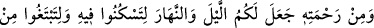
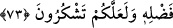
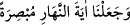

gibi ifâdelerle ışığın getirdiği faydaları zikretmemesi; asıl maksadın ışık olması ve onun
faydalarının açık ve âşikâr olup bilinmesi sebebiyledir. Gece ise böyle değildir.
Âyet geceye değil, gündüze binâen “hâlâ görmeyecek misiniz?” ifâdesi ile sona
ermiştir. Çünkü gündüz, aydınlatma özelliğine sâhiptir. Nitekim “ (eşyayı) aydınlatan gündüzün aydınlığını getirdik)” (el-İsrâ, 17/12) buyrulmuştur. Bu
nedenle “hâlâ işitmeyecek misiniz?” ifâdesi kullanılmamıştır.
Bazıları demiştir ki: “ (görme)” ile gecenin hareketsizlik ve sükûneti birbirine
yakın zikredilmiştir. Zira senden başka birisi, senin sükûn (hareketsizlik) ve
benzerinden görmediğin şeyleri karanlığın faydaları olarak görebilir.
Bil ki; güneş bazı yerlerde [güney kutbu gibi] güçten düşmüş ve zayıf olarak döner;
burada güneş batmadığı için devamlı gündüz olur. Güneş ısısının yetersizliğinden dolayı
orada canlı yaşamaz ve ot bitmez. Bazı yerlerde de [kuzey kutbu gibi] durum bunun tam
tersidir; buralarda güneş doğmaz, devamlı gecedir; bu yüzden orada canlı yaşamaz, ot
bitmez. İşte bundan dolayıdır ki Allah Teâlâ aşağıdaki âyette şöyle buyurmuştur:
73. Rahmetinden ötürü Allah, geceyi ve gündüzü yarattı ki geceleyin
dinlenesiniz, (gündüzün) O’nun fazlu kereminden (rızkınızı) arayasınız ve
şükredesiniz.
Allah kendi şefkat ve merhametinden sizin için gece ve gündüzü yarattı.
Feleği gece ve gündüz döndürmede
Geceyi gönderip gündüzü getirmede, rızık vermede
Gecenin halveti, yaralı canın
Kendi canına ilâhî sırları söylemesi içindir
Gündüzler, halkın birbiriyle kavgası içindir
Böylece vücudun nizam ve intizamı sağlanır
İmâmü’l-Harameyn ve diğer bazı fazilet ehli kimseler der ki: İhtilaf yoktur ki, güneş
bir kavim üzerine batarken diğer kavim üzerine doğar; gece bir kavme uzarken, diğerine
kısalır; ekvator bölgelerinde ise gece ve gündüz dâima eşittir.
Şeyh Ebû Hâmid’e, Bulgar diyarında Kazan bölgelerinde namazların nasıl kılınacağı
soruldu; zira güneş oralarda sadece akşam ve yatsı arası kadar bir zamanda batar ve
sonra doğar.
Dedi ki: Bu bölgelerde yaşayanlar oruç ve namazlarını, en yakın bölgelere göre îfâ
ederler. Fakihlerin çoğuna göre gündüz ve geceyi takdir edip saatlere göre ibâdetlerini